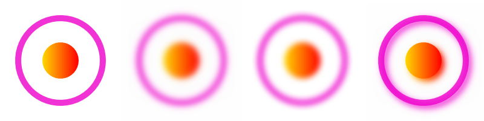

There are two blur classes: agg::stack_blur and agg::recursive_blur . agg::stack_blur is 3x-5x faster and has a bit limitations, while agg::recursive_blur is a true Gaussian blur. The interface is the same for these two blurs.
blur.blur (pixFmt, radius);
blur.blur (pixFmt, radius);
Note that the entire pixFmt are being blurred. However, it is pretty straightforward to limit blurring to a specifc region of pixFmt.
template <class PixFormat, class BlurType>
void
blurImage(PixFormat& pixFmt, int x, int y, int width, int height, BlurType& blur, double radius)
{
PixFormat subPixFmt (renBuffer);
subPixFmt.attach (pixFmt, x, y , x + width - 1, y + height - 1);
blur.blur (subPixFmt, radius);
}
Example
tutorial_blur.cpp does the following.
Just the image icon by itself.
The image icon blurred using agg::stack_blur
The image icon blurred using agg::recursive_blur
The image icon blurred using agg::recursive_blur with dx = 5 and dy = 5. Then original image icon was drawn on top. Effectively it creates a shadow effect.
The resulting image is the following.

An equivalent SVG is
tutorial_blur.svg
 1.8.13
1.8.13